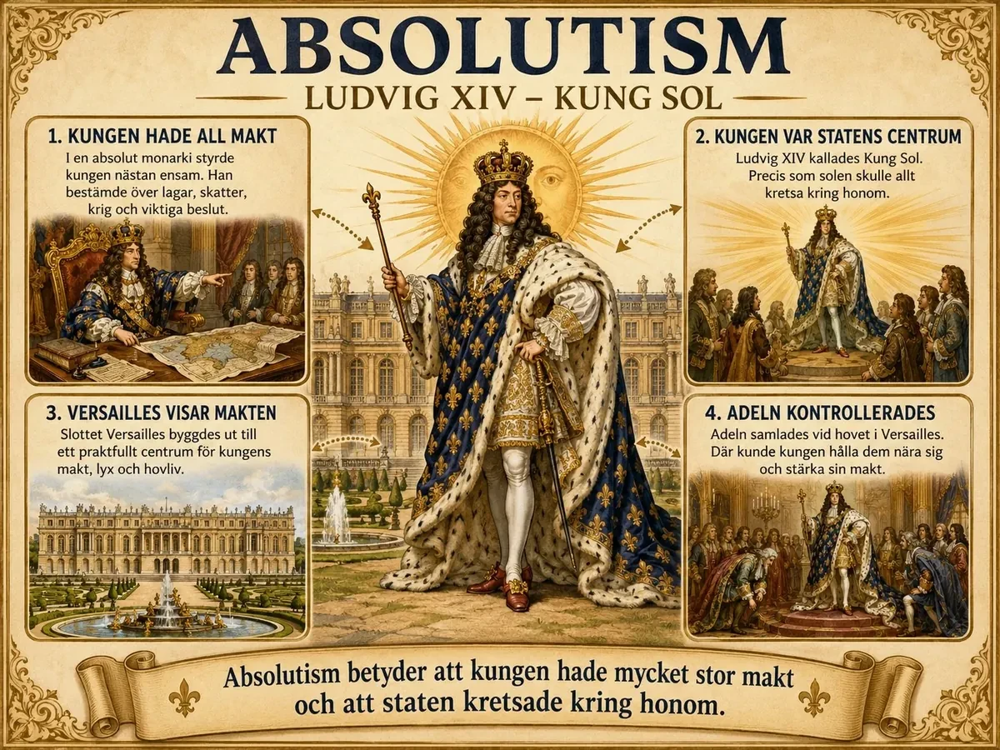
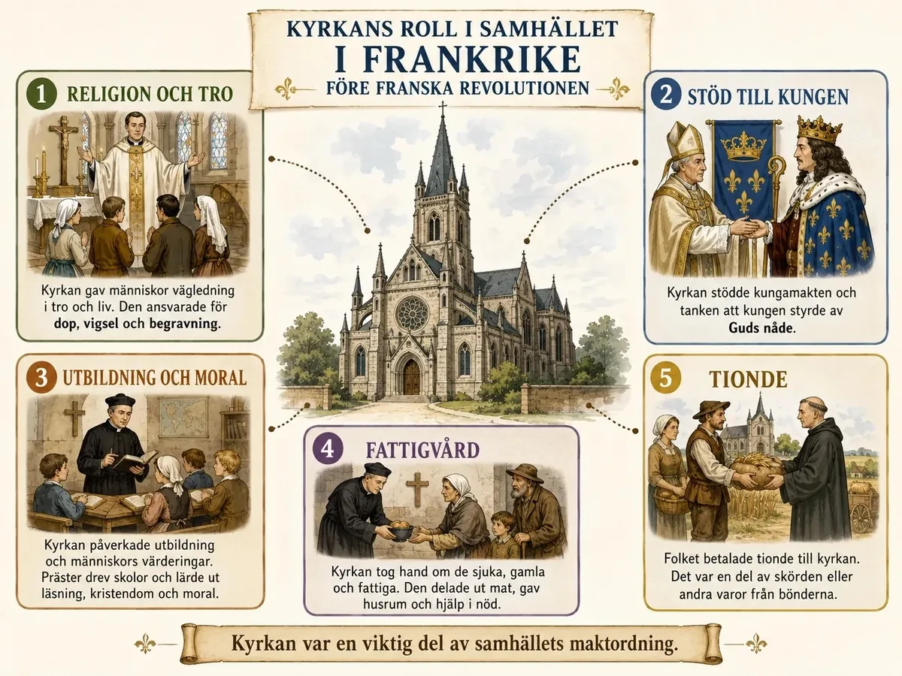

— Frankrike före 1789: absolutism, stånd och kyrka —
För att förstå franska revolutionen måste vi förstå hur Frankrike såg ut innan 1789. Det kallas l'ancien régime — den gamla ordningen. Det var ett samhälle där kungen hade nästan all makt, kyrkan hade stort inflytande och befolkningens rättigheter berodde på vilken grupp man föddes in i.
Frankrike styrdes som en absolut monarki . Kungen bestämde över lagar, krig och skatter utan en folkvald riksdag som kontrollerade honom. Den mest kända symbolen var Ludvig XIV — Kung Sol. Han sade att han var statens centrum, precis som solen är centrum i solsystemet. Slottet Versailles byggdes för att visa kungens makt. Där samlade han adeln kring sig och kontrollerade dem.

För att förstå varför den franska revolutionen bröt ut år 1789 behöver man först förstå hur Frankrike styrdes före revolutionen. Frankrike var ett av Europas mäktigaste länder. Landet hade stor befolkning, stark kultur och ett kungligt hov som många andra länder såg upp till. Teater, mode, konst, arkitektur och hovliv i Frankrike påverkade stora delar av Europa.
Men bakom denna bild av rikedom och makt fanns ett samhälle med stora orättvisor. Makten låg framför allt hos kungen, kyrkan och adeln. Den största delen av befolkningen hade lite politiskt inflytande, men fick samtidigt bära en stor del av samhällets ekonomiska bördor. Det gamla samhället byggde på absolutism, ståndssamhälle, kyrkans starka roll och tanken att kungen hade fått sin makt av Gud.
Detta gamla system brukar ofta kallas l'ancien régime , vilket betyder ungefär den gamla ordningen. Den franska revolutionen blev ett uppror mot just denna gamla ordning.
Frankrike styrdes som en absolut monarki. Det betyder att kungen hade mycket stor makt. Han styrde landet, bestämde över lagar, krig, skatter och viktiga ämbeten. Det fanns ingen folkvald riksdag som regelbundet kunde kontrollera honom på samma sätt som i en modern demokrati.
Den mest kända symbolen för den franska absolutismen var Ludvig XIV, som brukar kallas Kung Sol . Han ville visa att all makt i Frankrike utgick från honom. Precis som solen ansågs vara centrum i solsystemet ville Ludvig XIV vara centrum i staten. Han sägs ha uttryckt tanken: staten, det är jag . Det betyder inte bara att han var kung, utan att han såg sig själv som själva centrum för Frankrike.
Under Ludvig XIV byggdes slottet Versailles ut till ett enormt kungligt maktcentrum. Där samlades adeln kring kungen. Hovlivet fylldes av regler, ceremonier, fester och lyx. Versailles var inte bara ett slott. Det var också ett sätt för kungen att visa sin makt. Genom att samla adeln nära sig kunde han också kontrollera dem. Adeln blev beroende av kungens gunst, alltså hans stöd och uppskattning.
När Ludvig XVI blev kung på 1700-talet levde det gamla styrelsesättet kvar. Han ärvde ett system där kungen förväntades vara statens centrum. Problemet var att Frankrike samtidigt hade stora ekonomiska svårigheter. Staten hade stora skulder efter krig, hovet kostade mycket pengar och skattesystemet fungerade dåligt. Trots detta var det svårt att förändra landet, eftersom de grupper som hade makt och privilegier ofta ville behålla dem.
För att förstå varför den franska revolutionen blev så våldsam och genomgripande måste man först förstå hur stark, genomtänkt och till synes orubblig den ordning var som den störtade. Det gamla Frankrike — l'ancien régime — var inte bara "orättvist". Det var ett helt system där kungamakt, samhällsordning och kyrka grep in i varandra och bar upp varandra. Just därför var det så svårt att reformera: rörde man vid en del skakade allt. Och just därför blev sammanbrottet så totalt när det väl kom.
Absolutismen — all makt i en punkt. Grunden var den absoluta monarkin. Kungen stiftade lagar, förklarade krig, tog ut skatter och styrde staten utan någon folkvald församling som kunde säga nej. Den store symbolen var Ludvig XIV, "Solkungen", som lät bygga det väldiga slottet Versailles och satte sig själv i centrum av allt — precis som solen i mitten av sitt system. Versailles var inte bara ett praktbygge, utan ett politiskt verktyg: genom att samla adeln kring sig i ett liv av hovceremonier och intriger höll kungen dem sysselsatta, beroende och ofarliga. Makten var alltså inte bara stor, den var koncentrerad på ett sätt som gjorde den svår att utmana inifrån.
Gudsstaten — makten kom från Gud. Det som gjorde absolutismen så stabil var inte armén i första hand, utan idén bakom den. Kungens makt uppfattades som kungamakt av Guds nåde: han härskade på uppdrag av Gud själv. Det gav kungamakten en nästan helig ställning. Att kritisera eller göra uppror mot kungen blev därmed inte bara ett brott mot staten, utan nästan mot Gud. Så länge människor trodde på den föreställningen fanns det knappt något sätt att ifrågasätta ordningen med gott samvete — och det är just den föreställningen som upplysningen, som du snart ska möta, långsamt skulle underminera.
Ståndssamhället — rättigheter efter börd. Under kungen var samhället indelat i tre stånd. Det första ståndet var prästerna, det andra adeln, och det tredje ståndet var alla andra: bönder, hantverkare, arbetare, köpmän, läkare och jurister — alltså den stora majoriteten av befolkningen. Vilka rättigheter och skyldigheter man hade avgjordes inte av vad man kunde eller gjorde, utan av vilket stånd man föddes in i. Det var ett bördssamhälle. De två första stånden kallades frälsestånd och hade privilegier — särskilda fördelar, inte minst att slippa många skatter. Den orättvisan var inte en olyckshändelse i systemet; den var systemet.
Kyrkans makt — ordningens ryggrad. Kyrkan var inte bara en religiös institution utan en av samhällets mäktigaste krafter. Den ägde stora jordområden, tog in en särskild skatt, tionde, och hade ett enormt inflytande över utbildning, moral och människors världsbild. Framför allt gav kyrkan kungamakten dess legitimitet: det var kyrkans lära om kungen av Guds nåde som höll ihop hela bygget. Kung och kyrka stödde alltså varandra — kungen skyddade kyrkans ställning, och kyrkan helgade kungens makt. Tredje ståndet fick bära kostnaderna för båda.
Ett samhälle med stora orättvisor. Lägger man ihop delarna framträder mönstret. De som hade minst — bönderna och det övriga tredje ståndet — betalade mest: skatt till staten, avgifter till adeln och tionde till kyrkan. De som hade mest — adel och präster — betalade minst. En absolut kung stod över alltihop, skyddad av tanken att han styrde på Guds uppdrag. Så länge systemet fungerade och människor accepterade dess grundidéer kunde det bestå i århundraden. Men det byggde på två sköra antaganden: att kungens makt verkligen var gudagiven, och att var och en skulle nöja sig med den plats hon fötts till. När upplysningens idéer började ifrågasätta det första, och ekonomiska kriser gjorde det andra outhärdligt, började hela den gamla ordningen knaka i fogarna.
Det är därför bakgrunden är så viktig. Franska revolutionen blir obegriplig om man inte först ser vad den vände sig mot: inte en enskild dålig kung, utan ett helt sammanhängande system av makt, börd och tro. Det är det systemet — l'ancien régime — som de följande temana ska visa hur det först försvagades, sedan utmanades, och till slut störtades.
Kungen ansågs ha fått sin makt från Gud — kungamakt av Guds nåde . Det betydde att kritisera kungen nästan kunde ses som att kritisera Gud.
Frankrike var också ett samhälle där religionen hade mycket stor betydelse. Många människor tänkte att samhällets ordning var bestämd av Gud. Kungen sågs inte bara som en vanlig politisk ledare. Han sågs som någon som hade fått sin makt från Gud. Detta brukar kallas kungamakt av Guds nåde.
Det innebar att det kunde uppfattas som fel eller farligt att ifrågasätta kungen. Om kungen var satt att styra av Gud, då blev motstånd mot kungen inte bara ett politiskt problem. Det kunde också uppfattas som ett angrepp på den ordning Gud hade skapat.
Den här tanken hjälpte till att skydda kungamakten. Den gjorde att många människor lärde sig att samhället skulle vara ordnat uppifrån och ner: Gud överst, sedan kungen, därefter kyrkan och adeln, och längst ner den stora folkmajoriteten.
Man kan därför säga att Frankrike före revolutionen hade drag av en gudsstat, eftersom religionen användes för att förklara och försvara samhällets maktordning. Kyrkan och kungamakten stödde varandra. Kungen skyddade kyrkans ställning, och kyrkan hjälpte till att ge kungens makt religiös legitimitet.
Samtidigt började dessa idéer ifrågasättas under 1700-talet. Upplysningens tänkare menade att makt borde kunna granskas med förnuft. De frågade varför en kung skulle få styra bara för att han var född i rätt familj. De började också diskutera människors rättigheter, lagar och folkets inflytande. Därför blev konflikten mellan det gamla gudsstyrda samhället och de nya upplysningsidéerna en viktig bakgrund till revolutionen.
📕 Fördjupningen är gemensam för hela temat. Välj underdel A – Absolutism och läs den där.
Frankrike var ett ståndssamhälle — befolkningen delades in i tre grupper:
Första ståndet: prästerna och kyrkan Andra ståndet: adeln Tredje ståndet: nästan alla andra — bönder, hantverkare, arbetare, köpmän, läkare, jurister
Adeln och prästerna hade privilegier — särskilda fördelar. De kallades frälsestånd och slapp många skatter. Det tredje ståndet var den största gruppen men betalade mest skatt och hade minst makt. Det är ett bördssamhälle — din familj och födelse avgjorde dina möjligheter.
Frankrike var ett ståndssamhälle. Det betyder att människor delades in i olika grupper, eller stånd, beroende på vilken plats de hade i samhället. Samhället var också ett bördssamhälle. Det betyder att en människas möjligheter, rättigheter och skyldigheter till stor del bestämdes av vilken familj och vilket stånd hon föddes in i. Det handlade alltså inte främst om vad man kunde, hur hårt man arbetade eller vilka kunskaper man hade, utan om ens börd, alltså ens ursprung och familjebakgrund.
Det franska samhället delades in i tre stånd:
De ledde gudstjänster, drev skolor och tog hand om fattigvård. Höga prästers ledare kom ofta från adeln och kunde leva rikt.
De ägde mycket jord, hade höga uppdrag inom staten, kyrkan och armén, och behövde sällan betala skatt.
Den klart största gruppen. Här fanns både rika borgare (köpmän, jurister, läkare) och fattiga människor som bönder, hantverkare och arbetare.
Kyrkan och adeln räknades som frälsestånd. Ordet frälst betyder här att man var befriad från vissa skyldigheter, framför allt från många skatter. Det innebar att kyrkan och adeln hade särskilda privilegier. De hade hög status i samhället, kunde äga mycket jord och hade ofta lättare att få viktiga uppdrag inom staten, kyrkan och armén. Samtidigt behövde de inte bära samma ekonomiska bördor som resten av befolkningen.
Det tredje ståndet var den klart största gruppen i samhället. De flesta fransmän tillhörde tredje ståndet. Trots det hade de minst politiskt inflytande. De betalade mycket av skatterna som staten behövde, samtidigt som de också kunde behöva betala avgifter till adeln och kyrkan.
Det som gjorde systemet extra orättvist var att många i tredje ståndet arbetade och producerade maten, varorna och pengarna som samhället behövde, medan de grupper som hade mest makt och flest privilegier ofta betalade minst skatt. I ett bördssamhälle kunde en människa alltså födas till makt och skattefrihet, medan en annan föddes till hårt arbete, lågt inflytande och många skyldigheter. Därför blev ståndssamhället en viktig orsak till att människor började kräva förändring.
📕 Fördjupningen är gemensam för hela temat. Välj underdel A – Absolutism och läs den där.
Kyrkan hade en enorm roll. Den ansög för gudstjänster, utbildning och hjälp till fattiga. Men kyrkan stödde också kungamakten och hävdade att kungen styrde med Guds vilja. Kyrkan ägde mycket jord och tog in tionde — bönder måste ge en del av sin skörd till kyrkan. Tillsammans med skatten till staten och avgifterna till adeln bar bönderna en tung börda.

Kyrkan hade en mycket stark ställning i Frankrike före revolutionen. Den katolska kyrkan var inte bara en religiös institution. Den var också en viktig del av samhällets maktordning. Kyrkan ägde mycket jord, hade stora inkomster och hade stort inflytande över människors liv.
Prästerna ansvarade för gudstjänster, dop, bröllop och begravningar. Kyrkan hade också betydelse för utbildning och fattigvård. För många människor var kyrkan därför närvarande under hela livet, från födelse till död. Kyrkan påverkade både människors tro, vardag och syn på samhället.
Kyrkan lärde också ut att samhället hade en ordning som människor skulle acceptera. Denna ordning passade ihop med tanken att kungen styrde med Guds vilja. På så sätt blev kyrkan ett stöd för det gamla samhället. Den hjälpte till att förklara varför vissa människor hade makt och andra skulle lyda.
Kyrkan fick också inkomster från folket genom en avgift som kallades tionde. Tionde innebar att bönder och andra människor skulle lämna en del av sin produktion eller inkomst till kyrkan. Ursprungligen betyder ordet att man gav en tiondel, alltså tio procent, men i praktiken kunde det se olika ut. För många bönder blev tiondet ännu en börda ovanpå andra skatter och avgifter.
Detta skapade kritik och missnöje. Många i tredje ståndet tyckte att det var orättvist att kyrkan hade stora rikedomar och ägde mycket jord, samtidigt som vanliga människor hade svårt att försörja sig. Bönder kunde alltså behöva betala skatt till staten , avgifter till adeln och tionde till kyrkan . För människor som redan levde nära fattigdom kunde detta kännas mycket orättvist.
Det fanns också skillnader inom kyrkan. Höga kyrkliga ledare, som biskopar, kom ofta från adeln och kunde leva rikt. Vanliga bypräster levde däremot ofta enklare och stod närmare folket. Därför var kyrkan inte en helt enhetlig grupp. Men som institution var kyrkan ändå en viktig del av det gamla samhällets makt och privilegier.
📕 Fördjupningen är gemensam för hela temat. Välj underdel A – Absolutism och läs den där.
Under 1700-talet började fler ifrågasätta det gamla systemet. Upplysningens idéer spreds: makten borde bygga på förnuft och folkets rättigheter, inte på tradition och börd. När även ekonomisk kris, statsskuld och missväxt dräbbade Frankrike blev det gamla systemet svårt att försvara.
Frankrike före revolutionen var alltså ett samhälle där makt, rikedom och rättigheter var ojämnt fördelade. Kungen hade mycket stor makt genom absolutismen. Hans makt försvarades av tanken att han styrde med Guds vilja. Kyrkan hade stort inflytande över både människors tro och samhällets ordning. Ståndssamhället gjorde att präster och adel hade privilegier, medan tredje ståndet bar många av bördorna.
Det betyder inte att alla människor före revolutionen gjorde uppror hela tiden. Många var vana vid det gamla samhället och såg det som naturligt. Men under 1700-talet blev problemen tydligare. Staten hade stora skulder. Skatterna upplevdes som orättvisa. Upplysningens idéer spreds. Fler började fråga varför vissa skulle ha makt och privilegier bara för att de föddes in i rätt grupp.
När missväxt, höga brödpriser och ekonomisk kris sedan drabbade Frankrike blev det gamla systemet svårt att försvara.
Revolutionen handlade inte bara om hunger och pengar. Den handlade också om makt, rättvisa och frågan om vem som egentligen hade rätt att styra samhället . I Tema 2 ska vi titta närmare på vad som utlöste revolten — varför det gamla systemet bröt samman just år 1789.
📕 Fördjupningen är gemensam för hela temat. Välj underdel A – Absolutism och läs den där.
Laddar övningskort…
Laddar frågor ...